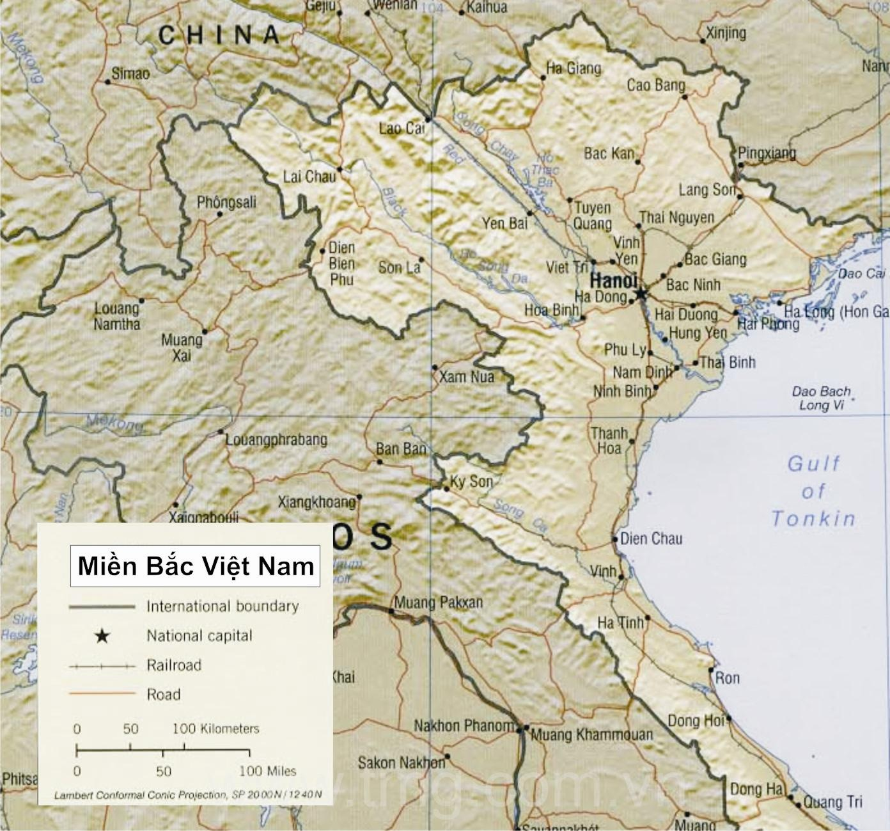

WIKI VIỆT NAM

Miền Bắc Việt Nam là một khái niệm để chỉ vùng địa lý ở phía bắc nước Việt Nam. Tuy nhiên, tùy theo từng thời điểm lịch sử và thói quen sử dụng mà khái niệm này đôi lúc còn được dùng để chỉ các vùng lãnh thổ chính trị khác nhau một cách không chính thức.
Miền Bắc Việt Nam có thể là:
Phân định địa lý đồng nghĩa với Bắc Bộ Việt Nam
Phân định địa chính trị ở phía bắc sông Gianh (nay thuộc tỉnh Quảng Bình) (Đàng Ngoài)
Phân định hành chính đồng nghĩa với Bắc Kỳ hay Bắc Thành của nhà Nguyễn vào thời Pháp thuộc và là một trong 3 vùng lãnh thổ chính (gồm Bắc Bộ, Trung Bộ và Nam Bộ) của Việt Nam.
Phân định theo Hiệp định Genève là khu vực tập kết quân sự tạm thời của Quân đội nhân dân Việt Nam và khu vực thuộc quyền quản lý hành chính tạm thời của Việt Nam Dân chủ Cộng hòa nằm phía bắc giới tuyến quân sự tạm thời là vĩ tuyến 17. Căn cứ Điều 14, Khoản a trong Hiệp định Geneve 1954, Việt Nam Dân chủ Cộng hòa có chủ quyền trên toàn bộ lãnh thổ Việt Nam, tạm thời có quyền quản lý hành chính phía bắc vĩ tuyến 17 cho tới khi tổ chức tổng tuyển cử trên toàn Việt Nam. Liên hiệp Pháp từ bỏ chủ quyền và quyền chủ quyền ở Việt Nam nhưng vẫn có quyền quản lý hành chính phía Nam vĩ tuyến 17.[1] Ngày nay, miền Bắc Việt Nam được hiểu là phần lãnh thổ các tỉnh từ Hà Giang tới Ninh Bình.
Miền Bắc Việt Nam
Ngày nay, miền Bắc Việt Nam được hiểu là phần lãnh thổ các tỉnh từ Hà Giang tới Ninh Bình.
Theo cách phân chia hiện nay thì miền Bắc Việt Nam, còn được gọi là Bắc Bộ, bao gồm các tỉnh ở phía bắc tỉnh Thanh Hóa.Theo các cách phân chia về địa lý và kinh tế thì miền Bắc gồm các tiểu vùng như sau:
Theo địa lý tự nhiên
Vùng lãnh thổ miền Bắc này được chia thành 3 vùng lãnh thổ nhỏ:
Tây Bắc bộ (bao gồm 6 tỉnh: Lào Cai, Yên Bái, Điện Biên, Hoà Bình, Lai Châu, Sơn La). Vùng này chủ yếu nằm ở hữu ngạn sông Hồng. Riêng Lào Cai, Yên Bái đôi khi vẫn được xếp vào tiểu vùng đông bắc.
Đông Bắc bộ (bao gồm 9 tỉnh: Hà Giang, Cao Bằng, Bắc Kạn, Lạng Sơn, Tuyên Quang, Thái Nguyên, Phú Thọ, Bắc Giang, Quảng Ninh.)
Đồng bằng sông Hồng (bao gồm 10 tỉnh thành: Bắc Ninh, Hà Nam, Hà Nội, Hải Dương, Hải Phòng, Hưng Yên, Nam Định, Ninh Bình, Thái Bình, Vĩnh Phúc.)
Theo quy hoạch vùng kinh tế
Dựa theo các quy hoạch phát triển kinh tế thì trong số 6 Vùng kinh tế - xã hội, miền Bắc gồm có 2 vùng kinh tế - xã hội gồm:
Vùng duyên hải Bắc Bộ (bao gồm 11 tỉnh: Hà Nội, Quảng Ninh, Vĩnh Phúc, Bắc Ninh, Hải Dương, Hải Phòng, Hưng Yên, Thái Bình, Hà Nam, Nam Định, Ninh Bình.)
Trung du và miền núi phía bắc (bao gồm 14 tỉnh: Hà Giang, Cao Bằng, Lào Cai, Bắc Kạn, Lạng Sơn, Tuyên Quang, Yên Bái, Thái Nguyên, Phú Thọ, Bắc Giang, Lai Châu, Điện Biên, Sơn La, Hòa Bình). Các trung tâm của khu vực miền núi phía bắc còn lại là các thành phố: Lạng Sơn, Điện Biên Phủ, Sơn La, Lào Cai.
Theo quy hoạch vùng đô thị
Cả nước hiện có 2 vùng quy hoạch đô thị là Vùng Thành phố Hồ Chí Minh ở miền Nam và Vùng Hà Nội ở miền Bắc:
Vùng thủ đô Hà Nội (bao gồm 10 tỉnh, thành: Thái Nguyên, Phú Thọ, Bắc Giang, Hoà Bình, Bắc Ninh, Hà Nam, Hà Nội, Hải Dương, Hưng Yên, Vĩnh Phúc). Thủ đô Hà Nội là đô thị trung tâm của vùng.
Miền núi phía bắc ở cách phân chia thứ hai gồm 2 tiểu vùng Tây Bắc Bộ (không tính Hòa Bình thuộc vùng Hà Nội) và Đông Bắc Bộ (không tính Quảng Ninh thuộc vùng duyên hải Bắc Bộ và Thái Nguyên, Phú Thọ, Bắc Giang thuộc quy hoạch vùng thủ đô Hà Nội) theo cách phân chia thứ nhất. Vùng duyên hải Bắc Bộ có Hải Phòng là đô thị trung tâm và là một trong 5 thành phố trực thuộc trung ương và 10 đô thị loại 1.
This site was created with the Nicepage